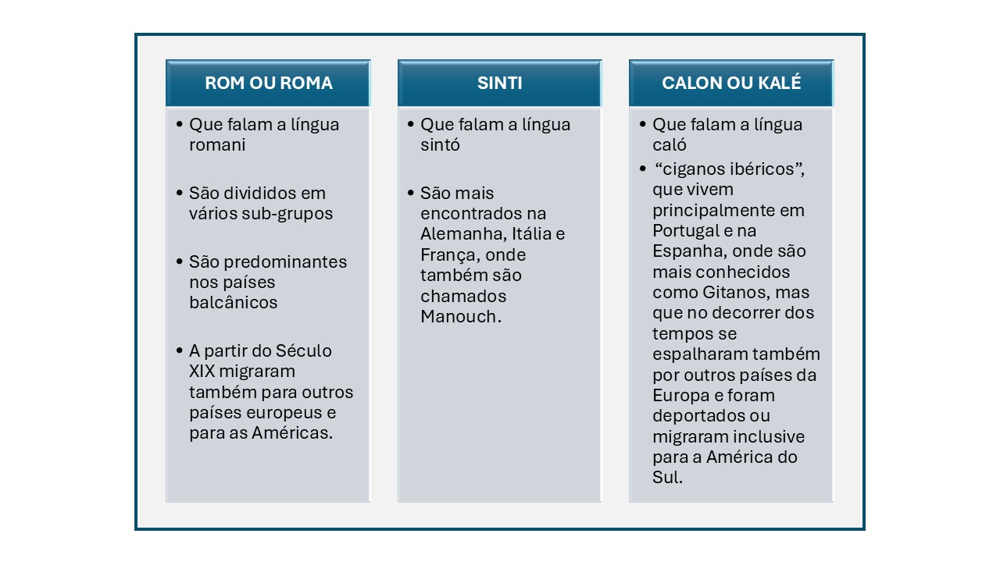
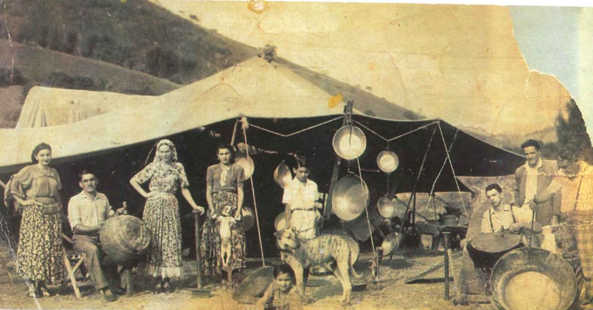
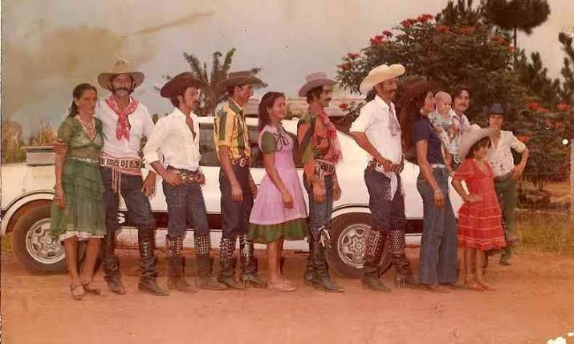
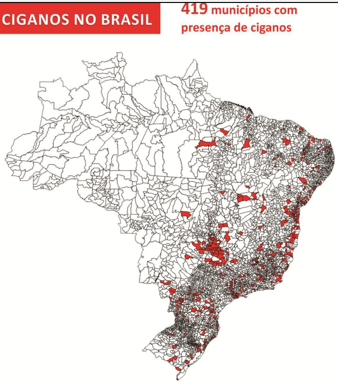
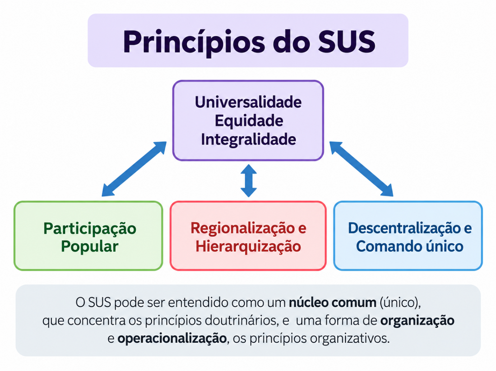
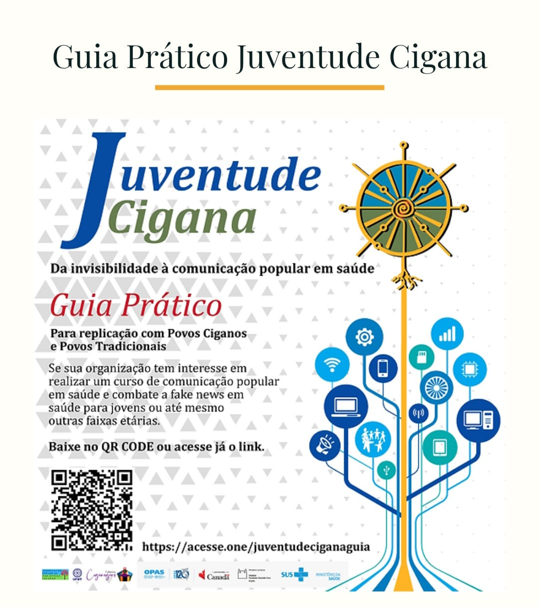
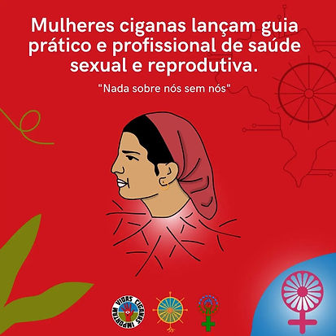

Preconceito, discriminação e estigma
Ao final desta aula, você será capaz de:
- Identificar os conceitos de estigma , preconceito e discriminação , reconhecendo suas definições básicas no contexto da saúde.
- Explicar como estigma, preconceito e discriminação se intercruzam e afetam a saúde física, mental e social de pessoas ciganas.
- Examinar criticamente situações de atendimento em saúde que evidenciem práticas discriminatórias contra povos ciganos, distinguindo exemplos de racismo institucional.
- Refletir sobre as consequências do estigma e da discriminação no acesso e na permanência de pessoas ciganas nos serviços de saúde, avaliando a efetividade de políticas públicas existentes.
- Propor estratégias ou práticas inclusivas que possam ser aplicadas por profissionais de saúde para reduzir os impactos negativos do preconceito e promover a equidade no cuidado destinado aos povos ciganos.
Introdução
O estigma é uma marca social que associa características negativas a indivíduos ou grupos, levando à sua desvalorização e marginalização. Esse fenômeno pode ocorrer em diversos contextos, como:
- saúde mental
- condições físicas
- comportamentos não conformes.
Quando alguém é estigmatizado, a percepção pública é muitas vezes baseada em estereótipos e informações inadequadas, resultando em discriminação e exclusão.
Sujeitos pertencentes a minorias raciais e étnicas podem sofrer estigmatização, o que reforça barreiras sociais e promove injustiças.
O estigma pode ser pensado por aquilo que Blumer (1958) chamou de imagens desumanizadoras. Uma condição basilar para formação do preconceito, que é um sentimento de superioridade em relação ao outro, que lhe inferioriza. O preconceito pode levar à discriminação e injustiças, pois promove estereótipos e barreiras entre indivíduos ou grupos. Tal imbricamento se manifesta através da teia de discursos e ações, sustentando o racismo estrutural. Assim, estigma, preconceito e discriminação não apenas afetam a dignidade e a autoestima dos indivíduos, mas também pode ter impactos negativos em sua saúde e bem-estar, perpetuando ciclos de exclusão e desigualdade, tornando mais difícil a integração e o reconhecimento pleno das capacidades e direitos dessas pessoas.
Dentre os grupos em situação de vulnerabilidade, os povos ciganos sofrem com os estigmas impostos pelos não ciganos. Os povos ciganos foram historicamente associados à selvageria e só ganhavam importância quando provocavam as autoridades. Assim, eram percebidos apenas através da perspectiva do agressor, sem consideração de seus contextos social e histórico, no Brasil sendo rotulados como “sujos”, “trapaceiros” e “perigosos”. Dessa forma, perderam sua singularidade e foram reduzidos a uma imagem estereotipada associada à ilegalidade, servindo como base para a formação de conhecimentos e práticas hegemônicas nas ações governamentais, onde frequentemente são vistos como “pessoas suspeitas”. Esse preconceito sustentado pela crença de que apenas quem possuía uma residência era digno de confiança.
Ao fazer uma pesquisa sobre as imagens que não ciganos têm sobre ciganos, pesquisadores do Departamento de Psicologia da Universidade Federal de Sergipe observaram uma associação da palavra “ciganos” com uma representação extremamente desumanizadora. Nesta pesquisa, Lima, Faro e Santos (2016) argumentam que os estereótipos sobre os Povos Ciganos são extremamente negativos, desqualificando ciganos como:
- Criminosos
- Trambiqueiros
- Vagabundos
- Místicos, nômades
Essas atribuições podem ser observadas no ângulo do peso da estigmatização; alimentando o medo e aversão, ações que empurram esses sujeitos para as margens, refletindo nas condições sociais, econômicas e ambientais, que, por sua vez, afetam tanto a saúde quanto a oferta dos serviços neste âmbito.
Esta rede de discursos que estigmatiza e desumaniza ciganos está diretamente ligada a questões relacionadas à saúde, bem como estrutura e dificulta o acesso destes sujeitos ao sistema de saúde. Um exemplo pode ser visto na pesquisa do Calon Silva Júnior (2018) quando relata que todas as pessoas ciganas entrevistadas por ele sofreram, de algum modo, racismo institucional no âmbito da oferta de serviços de saúde (casos de esterilizações forçadas em mulheres ciganas em Portugal, maus tratos por parte de alguns profissionais, bem como conflitos entre pessoas ciganas e profissionais da saúde no Brasil).
Assista ao vídeo “mais de 60% dos ciganos em Portugal dizem ser alvo de discriminação”.
Barata (2009) aponta que, a despeito da complexidade do tema, a discriminação afeta a saúde. A exclusão tem um impacto significativo na probabilidade de adoecimento físico e mental, bem como está relacionada a comportamentos de saúde e procura por assistência médica. Em um estudo de revisão de literatura, Ferrer (2003) informa que ciganos espanhóis estão na lista daqueles que sofrem fortes desigualdades sociais em saúde.
No Brasil, Costa e Rolim (2014) identificaram fatores sociais e econômicos que interferem na saúde cigana e citaram a insalubridade em que alguns vivem como um fator que os torna mais suscetíveis às doenças infectocontagiosas, além da dificuldade no acompanhamento e monitoramento em relação às doenças crônicas.
Estas pesquisas citadas ilustram como os estigmas, o preconceito e a discriminação afetam a saúde de ciganos, assim como estruturam o acesso e permanência nas instituições de saúde. Estereótipos negativos e preconceitos podem resultar em discriminação, desconfiança e um tratamento desigual por grande parte dos profissionais de saúde. Além disso, as diferenças culturais e linguísticas, se não conhecidas, valorizadas e compreendidas, podem criar barreiras significativas (incluindo a falta de conhecimento sobre as práticas e crenças culturais ciganas), o que pode levar a mal-entendidos e um atendimento inadequado, ou ainda, o não seguimento com tratamento e intervenção por parte da pessoa cigana. Por outro lado, consideramos que a educação continuada em saúde, que leve em conta o impacto de estigma, preconceito e discriminação em relação às minorias étnicas, como, por exemplo, os povos ciganos, pode ser um ponto inicial para refletir a respeito das falhas na efetivação de serviços de saúde. Uma reflexão que revisita os princípios basilares do Sistema Único de Saúde, a saber:
- Universalidade
- Equidade
- Integralidade
- Efetiva participação popular.
Assista ao vídeo “Ciganos no Brasil: saúde e preconceitos”, que aborda a realidade dos povos ciganos no país, com destaque para os desafios relacionados à saúde e ao preconceito enfrentado tanto nos serviços quanto na sociedade em geral.
O objetivo desta aula é ajudar o estudante a compreender como o estigma, o preconceito e a discriminação interferem, afetando negativamente a saúde de pessoas ciganas, bem como o acesso e a oferta de serviços de saúde para povos ciganos. Para tanto, está organizada da seguinte maneira: no primeiro tópico, apresentamos uma contextualização sobre os povos ciganos; já no segundo tópico, discorreremos sobre a questão do Estigma, Preconceito e Discriminação no acesso à saúde enfrentados por esses povos. No terceiro ponto, abordaremos algumas políticas e práticas para redução de impactos negativos na saúde de pessoas ciganas e no acesso aos serviços de saúde, seguido das conclusões e uma proposta de atividade para fixação do conteúdo.
Povos Ciganos: estigma, preconceito e discriminação no acesso aos serviços de saúde
O termo ‘cigano’ é genérico e teve origem na Europa no século XV. Essa nomenclatura foi dada pelos não ciganos. (Moonen, 2011). Esse termo, além de não abarcar as particularidades dos grupos, tem uma carga semântica negativa, (muito embora o aspecto de estereótipos positivos que só veiculam uma visão romantizada do ser cigano). Isso conduziu o movimento cigano europeu a propor a nomenclatura “Rom” ou “Romá” (Teixeira, 2008). A Organização das Nações Unidas (ONU) considerou a proposta, mas a nova terminologia não focou isenta de críticas, visto que os termos Rom é o modo pelo qual apenas um dos grupos se autodenominam (Silva Júnior; Toyansk, 2020).
Especialistas em estudos Romani oferecem uma visão abrangente sobre a presença dos ciganos ao redor do mundo. A partir de pistas linguísticas, apontam que os ciganos têm origens no subcontinente indiano, migrando para a Europa e outras partes do mundo ao longo dos séculos. Esse deslocamento começou há aproximadamente mil anos e resultou em comunidades estabelecidas em diversas regiões. Além das grandes comunidades na Europa, os ciganos também se estabeleceram em várias regiões fora da Europa. Isso inclui a América do Norte, América do Sul e até mesmo a Austrália (Moonen, 2011).
Os deslocamentos, a interação com não ciganos e a temporalidade impactaram de modo que cada comunidade cigana tenha suas particularidades. Assim, embora compartilhem origens comuns, as tradições e costumes variam amplamente entre os grupos ciganos, refletindo suas adaptações locais e influências regionais (Silva Júnior, 2018; Moonen, 2011).
Ciganos e ciganólogos não-ciganos argumentam que os povos ciganos são distinguidos por três grandes grupos, ou como o Calon Aluízio (Silva Júnior, 2018) tem defendido de troncos étnicos. Moonen (2011) apresenta:

No Brasil, há presença cigana destes três troncos étnicos. Não há um acordo sobre quando os ciganos chegaram e esse território (Silva Júnior; Toyansk, 2020). O que a historiografia comenta é que os Calon foram os primeiros ciganos que chegaram ao Brasil, dada as expulsões de Portugal, e de forma intensa durante o reinado de Dom João V (1706 a 1750). Os Rom só começaram a chegar ao Brasil na primeira metade do século XIX e em número maior na segunda metade do século. A fotografia a seguir faz parte do acervo pessoal da família Rom Iovanovitchi, datada de 1936.


É estimado que existam entre 500 mil e 1 milhão de pessoas ciganas no Brasil (Teixeira, 2008). Contudo, de acordo com Silva Júnior (2018), os dados que permitem a quantificação e localização dos povos ciganos do Brasil apresentam inconsistências, uma vez que não há a inclusão desses no censo populacional.
A ilustração a seguir, aponta a presença dos ciganos no Brasil e representa, de modo geral, como essa presença cigana é marcante, sobretudo no leste do território brasileiro. Ressalta-se, no entanto, que esses dados têm números defasados, visto que, o IBGE (Instituto Brasileiro de Geografia e Estatística) não faz a contagem dos Povos Ciganos no censo populacional, o que também dificulta a criação de políticas públicas para este povo.

Durante séculos, os não ciganos rotulam ciganos com adjetivações negativas, isto é, produzem e colocam em circulação estigmas que estruturam os discursos de preconceito que sustentam a discriminação nas tramas do anticiganismo. Podemos observar esses estigmas em:
-
Leis
-
Decretos
-
matérias jornalísticas
-
processos criminais
-
dicionários.
Confira o vídeo da campanha #YoNoSoyTracacero, que ilustra como o verbete “cigano” e suas derivações (ciganice, ciganada, cigana) podem reforçar estereótipos.
O pesquisador Andrade Júnior (2013) destaca que esse modo de operar a exclusão sustentou e ainda sustenta a dinâmica dos Estados, visto que partilham e disseminam a imagem de ciganos como perigosos e desnecessários.
Na Europa Ocidental, os ciganos enfrentam desafios como discriminação, marginalização e pobreza (Silva Júnior, 2018). Moonen (2011) identificou sete políticas adotadas por países ocidentais contra os ciganos como:
- escravidão;
- prisão;
- deportação e expulsões;
- isolamento em determinados lugares;
- integração ou pluralismo;
- assimilação compulsória ou o etnocídio;
- extermínio físico ou o genocídio.
As comunidades ciganas enfrentam uma série de desafios significativos ao redor do mundo, que variam conforme a região, mas que frequentemente se entrelaçam em questões de discriminação, exclusão e pobreza. Em muitos países europeus, os ciganos enfrentam discriminação profunda e estigmatização, limitando seu acesso a oportunidades educacionais e de emprego. A falta de inclusão no sistema educacional resulta em altas taxas de abandono escolar e dificuldade em alcançar um nível adequado de alfabetização e habilidades.
As comunidades ciganas na Europa enfrentam historicamente diversas formas de discriminação e marginalização social. Essas situações variam de país para país, mas frequentemente envolvem segregação residencial, acesso limitado a serviços básicos, preconceito estrutural e estigmatização política. A seguir, são destacados alguns contextos específicos em diferentes países europeus.
Esses são alguns exemplos mais emergentes do modo como países líderes da União Europeia desumanizam pessoas pertencentes a esses grupos étnicos vulnerabilizados.
Assista ao vídeo do podcast organizado pela equipe do Público (P24) para uma compreensão mais aprofundada sobre os estigmas para ciganos em Portugal
Os processos de exclusão desencadeados por estigmas negativos afetam de modo direto a vida das crianças ciganas. Em uma resolução do Parlamento Europeu (órgão da União Europeia), de 5 de outubro de 2022, discorre sobre a situação das comunidades ciganas que vivem em acampamentos na UE (2022/2662(RSP)), destacando taxas de mortalidade infantil mais elevadas nas populações ciganas em comparação com as não ciganas, especialmente as que vivem em acampamentos. Também realça que as crianças que vivem em acampamentos ciganos nascem na pobreza e num ambiente pouco propício a um desenvolvimento físico e psicossocial saudável.
Erving Goffman em seu trabalho "Estigma: Notas sobre a Manipulação da Identidade Deteriorada" (1963) explora como os estigmas afetam a identidade e a interação social, focando em como os indivíduos estigmatizados lidam com a rejeição e a discriminação. Isso agrava a pobreza e perpetua a marginalização, se repetindo em todos os países com população cigana, refletindo no acesso à saúde.
Investigações feitas pela Rede Europeia Anti-Pobreza-Portugal (REAPN Portugal, 2009) apontam que as pessoas ciganas portuguesas vivem em média 18 anos a menos que a população portuguesa no geral (Silva Júnior, 2018).
Outro fator que contribui para a dificuldade no acesso à saúde se manifesta no reconhecimento legal e na documentação. Em países como a Grécia, a falta de documentação adequada pode restringir o acesso a direitos e serviços essenciais, exacerbando a marginalização.
No cenário brasileiro não seria diferente. A chegada de ciganos em todos os momentos históricos arrastava os estigmas enraizados na Europa. Entre os estigmas criados e compartilhados por não ciganos, destacamos:
Ainda, nesta lista, elencamos o conjunto de estereótipos que simplificam e reduzem ciganos à dança, à música e à falsa liberdade, por exemplo.
O estigma, como construção social, engendra os discursos preconceituosos e a discriminação. Esse intercruzamento endereçado a determinadas vidas em detrimento de outras acabam afetando a saúde individual e coletiva dos sujeitos. Para Barata (2009), alguns problemas e comportamentos de saúde como transtornos mentais, hipertensão arterial, baixo peso e prematuridade, doenças cardíacas, diabetes e obesidade, abuso de álcool e drogas e tabagismo apresentam maior associação com a exposição a situações de discriminação e racismo.
Fatores como a baixa escolaridade, a impossibilidade de exercer atividades profissionais, as condições precárias de moradia, a mobilidade por meio de transporte público ou privado e a falta de lazer levam as pessoas ciganas à impossibilidade de assegurar os princípios da acessibilidade universal, da equidade e da integralidade no tratamento dos serviços de saúde. Um exemplo dessa exclusão pode ser visto na ausência de pessoas ciganas nos conselhos municipais, estaduais e nacional de saúde, assim como na desconsideração dos diferentes saberes e cosmovisões de mundo que atravessam a questão da saúde e que necessitam de uma intermediação bilateral (Silva Júnior, 2018, 2020).
Em Portugal, um exemplo de participação é citado na tese de Silva Júnior (2018): o Calon Bruno Gomes, que acompanha e participa de todas as ações e políticas públicas voltadas aos povos ciganos no país. Ele coordena o programa Opré Chavalé e também atua no programa ROMED.
Os desdobramentos da estigmatização foram amplificados ainda mais no período pandêmico ao redor do mundo. Na Espanha, a pandemia do coronavírus veio acompanhada de atos racistas, incluindo ciganos. A culpa das comunidades ciganas pela disseminação do vírus se espalhou pelo WhatsApp e outros meios de comunicação (Silva Júnior; Gonçalves, 2022).
No Brasil, Silva Júnior (2020) registrou uma onda de descaso e ações racistas contra pessoas ciganas em situação de itinerância. As autoridades justificaram as atitudes de tratamento racista e discriminatório, “afirmando que as pessoas ciganas seriam vetores de transmissão do coronavírus”. O movimento cigano, junto a pesquisadores, escreveu uma nota pública. Esta ação foi protocolada junto ao Ministério da Saúde, ao passo que esse órgão respondeu com uma nota informativa, não assumindo a “responsabilidade de coordenar a criação de um plano de enfrentamento ao Covid-19 específico para comunidades romani, jogando esta responsabilidade aos Estados e municípios”.
As comunidades ciganas não foram incluídas no plano de imunização contra a Covid-19 como grupo prioritário. Para saber mais, leia a matéria.
A falta de preparo dos profissionais, políticas públicas, a estigmatização e preconceito que assolam o imaginário das pessoas quando se trata de pessoas ciganas criam barreiras para que elas possam obter cuidados médicos apropriados, e isso contribui para disparidades significativas na saúde e bem-estar.
Embora no arrastar dos séculos vejamos como os estigmas negativos que criam uma imagem deturpada para pessoas ciganas se mantêm no enraizando e disseminação por meio da ação institucionalizada, por outro lado, observamos a luta desses grupos vulnerabilizados na busca por equidade em todos os setores da sociedade. Além disso, destacamos algumas políticas públicas de inclusão para esses povos, considerando suas particularidades. No próximo tópico, apresentaremos algumas iniciativas que têm contribuído para a luta contra a estigmatização, preconceito e discriminação que afetam os povos ciganos, com ênfase em ações específicas no âmbito da saúde e na oferta dos serviços de saúde especificamente para ciganos do Brasil.
Políticas e práticas para redução de impactos negativos na saúde de pessoas ciganas e no acesso aos serviços de saúde
A enfermeira e pesquisadora Calin Suenya em seu trabalho de mestrado contribuiu significativamente para o campo da saúde, especialmente no que se refere ao cuidado na atenção primária e à compreensão das necessidades e práticas de saúde de comunidades específicas. Seu trabalho expõe como os cuidados de saúde são oferecidos e recebidos em contextos comunitários e culturais particulares. A pesquisa supracitada objetivou compreender a percepção dos moradores da comunidade cigana Calon de Pedro Maia sobre o cuidado na Atenção Primária à Saúde, considerando o acesso, o acolhimento de necessidade e o vínculo. Os resultados apontam para desrespeito às singularidades da cultura cigana local nas práticas de saúde, incluindo discriminação. Nota-se que a falta de execução de políticas públicas relacionadas às questões ambientais e estruturais favorecem o adoecimento nesta população, apontando, assim, para uma fragilidade na oferta dos serviços de saúde na Atenção Primária. Enquanto pesquisadora da saúde coletiva e ativista cigana, Mangueira (2023) argumenta que é urgente um cuidado integral, que considere as dimensões culturais, sociais e econômicas dos pacientes.
A promoção da igualdade de acesso aos serviços de saúde para a população cigana é um tema de crescente importância na literatura acadêmica e nas políticas públicas. Conforme o Calon Silva Júnior (2018), a exclusão social e a marginalização enfrentadas pelos ciganos muitas vezes resultam em barreiras significativas para a obtenção de cuidados de saúde adequados. O pesquisador argumenta que políticas públicas eficazes devem abordar não apenas a disponibilização de serviços, mas também a sensibilização dos profissionais de saúde para as especificidades culturais e sociais dessa população.
O Sistema Único de Saúde (SUS), instituído pela Lei n.º 8.080, de 19 de setembro de 1990, regula, em todo o território nacional, as ações e serviços de saúde. Entre os princípios e diretrizes que balizam as ações e serviços de saúde no âmbito público ou privado que são desenvolvidos conforme o artigo 198 da Constituição Federal (88), estão a:
- Universalidade
- Integralidade
- Equidade
- Participação da comunidade

Embora esses princípios estejam estabelecidos, sua efetivação na prática ainda apresenta limitações, resultando em desafios para a implementação das diretrizes previstas no SUS. Essa realidade é resultado de orientações políticas construídas em contextos em que se desconhece e não se aceita outros modos de vida, outros saberes que não os validados pela ciência. Isso acarreta exclusão das pessoas ciganas da cidadania e dos serviços de saúde, visto que há lacunas no que diz respeito ao princípio da equidade (Silva Júnior, 2018, 2020).
A equidade vincula-se à necessidade de tratar diferente os desiguais e está diretamente ligada à perspectiva da saúde pública para os ciganos no Brasil. Sua implementação se dá quando as especificidades culturais e tradicionais são reconhecidas. Trata-se de oferecer condições de vida e saúde, como uma necessidade e possibilidade fundamental das pessoas, e parte de uma premissa: a existência das desigualdades e da exclusão social (Silva Júnior, 2018; Silva Júnior; Toyansk, 2020). O “Guia Orientador para a Atenção Integral à Saúde do Povo Cigano” (Brasil, 2022) prega que a implementação da equidade na oferta dos serviços de saúde depende do comprometimento de gestores federais, estaduais e municipais do SUS e na base de uma “articulação de políticas intersetoriais que visem melhorar as condições de vida e saúde dessas populações”
A falta de informação e a discriminação são obstáculos críticos. Para superar esses desafios, é necessário implementar práticas que garantam a inclusão cultural e a equidade no atendimento. Segundo Silva Júnior (2018), o posicionamento do Ministério Público Federal na busca pela inclusão cidadã dos ciganos é um movimento associado a um contexto maior de mudança no tratamento que o Estado brasileiro tem dispensado a estes grupos, saindo de uma posição secular de elaborador de políticas persecutórias e anticiganas para uma tentativa de sua integração social.
Uma das estratégias propostas por Silva Júnior (2018) se refere ao envolvimento da comunidade cigana na elaboração e implementação das políticas de saúde, garantindo que suas necessidades e perspectivas sejam adequadamente representadas. Um exemplo disso foi o Curso Juventude Cigana “Da invisibilidade à comunicação popular na saúde’’ e os desdobramentos dessa ação formativa. Vejamos um folder de divulgação dessa formação:

O curso oferecido por pessoas ciganas para jovens, realizou atividades da formação, ofertada em parceria com a Universidade Federal do Mato Grosso (UFMT) e que teve como objetivo o combate às fake news e desinformação na saúde pública. Esta iniciativa foi realizada por meio de uma Chamada Pública da Fundação Oswaldo Cruz (Fiocruz) de Brasília e da Organização Pan-Americana de Saúde, com o apoio do governo do Canadá. O projeto contou ainda com as parceiras dos coletivos Orgulho Romani e Ciganagens e do projeto Mapas da Vida, da Universidade Federal de Rondonópolis (UFR).
Como resultado desta ação, mulheres ciganas do Brasil criaram um guia prático e profissional de saúde reprodutiva para mulheres pertencentes a este grupo. O Grupo de Trabalho que elaborou este guia entende que saúde é um dos principais marcadores raciais desse país; assim, o acesso das mulheres ciganas à atenção sexual e reprodutiva é ínfimo e não atende a sua dignidade. O material do curso e do lançamento do guia prático estão disponíveis para download no site do Coletivo Ciganagens, através do link (https://coletivociganagens.wixsite.com/my-site). A seguir, imagens de um folder de divulgação e capa do material, ambas contam com a criação de Desirré Mattos, Sara Macêdo e Hayanne Iovanovitchi.

O “Guia de Subsídios para o cuidado à Saúde do Povo Cigano” (Brasil, 2016) destaca que é crucial que o agente comunitário de saúde (ACS) realize o reconhecimento, o cadastramento; que construa um vínculo com esses povos. A recomendação aos enfermeiros, médicos e outros profissionais de saúde é para que a oferta de assistência direta ao usuário seja feita respeitando as singularidades e os costumes dos povos ciganos. Tais indicações objetivam a prestação de um cuidado respeitoso, baseado nos princípios da equidade e integralidade elementares do SUS.
Uma recomendação de estratégias para melhorar o atendimento, visando equidade e participação social, é dada pelo “Guia orientador para atenção básica do povo cigano” (Brasil, 2022). É crucial que a atuação dos profissionais de saúde em uma comunidade cigana deva iniciar por meio da identificação e do diálogo com lideranças ciganas, “para serem esclarecidas as intenções das ações de saúde, bem como para estabelecer vínculo, confiança e respeito”.
Para combater o racismo institucional no acesso aos serviços de saúde aos povos ciganos, implementando a universalidade, integralidade e equidade que organizam o SUS é necessário investir na formação continuada para os profissionais de saúde, visto que foi pensado por pessoas ciganas, significando que a explanação parte de vozes que carecem de escuta na sociedade.
O reconhecimento das vulnerabilidades, da desigualdade social, a valorização de culturas e tradições ciganas como constitutivas do patrimônio imaterial do país pode favorecer a inclusão de povos ciganos nas esferas institucionalizadas da sociedade e, assim, favorecer a participação social nas políticas de saúde. Meios de divulgação, informação e disseminação do conhecimento sobre os povos ciganos em sua riqueza e diversidade pode contribuir para reduzir situações de racismo/anticiganismo que foram/são espalhados nos mais diversos tipos de fala no seio da sociedade majoritária.
A educação desempenha um papel crucial na formação da sociedade. É necessário que a escola seja espaço de uma reflexão crítica sobre os estigmas negativos associados aos povos ciganos. A ausência de literatura inclusiva nas escolas e bibliotecas universitárias, assim como a falta de representação adequada, contribuem para a perpetuação de preconceitos e estereótipos desde a formação inicial dos indivíduos. Abordar esses estigmas na base educacional, de modo crítico, permite moldar uma perspectiva mais justa e respeitosa desde cedo, o que é essencial para a formação ideológica dos sujeitos.
Além disso, uma educação verdadeiramente inclusiva, que passe pelo princípio da equidade, corrobora para que as crianças ciganas fortaleçam sua identidade, tenham acesso ao conhecimento, e reconheçam seus direitos e deveres de cidadão, desde a infância. Também se faz necessário, oferecer formação aos profissionais de saúde que atuam na média e alta complexidade da saúde, garantindo que esses profissionais também estejam preparados para oferecer cuidados equitativos e sensíveis às especificidades culturais dos povos ciganos. Essa abordagem integrada é fundamental para promover uma sociedade mais igualitária e respeitosa.
Conclusão
O propósito desta aula foi compreender como o estigma, o preconceito e a discriminação afetam negativamente a saúde de indivíduos ciganos, bem como o acesso e a oferta de serviços de saúde para esses povos. Para tanto, apresentamos uma breve contextualização dos povos ciganos enfatizando os principais estigmas que desencadeiam e estruturam o racismo no âmbito dos serviços de saúde, seguida do compartilhamento de algumas iniciativas, principalmente de pessoas ciganas do Brasil no combate a esta estigmatização.